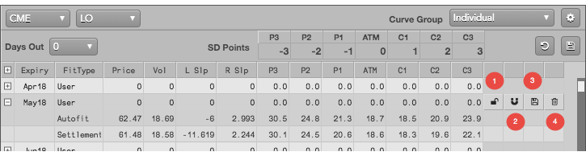
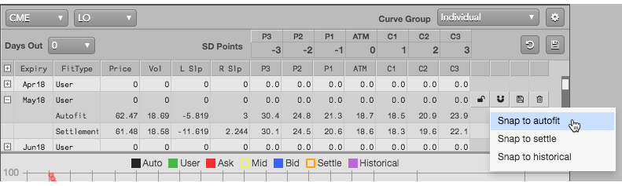
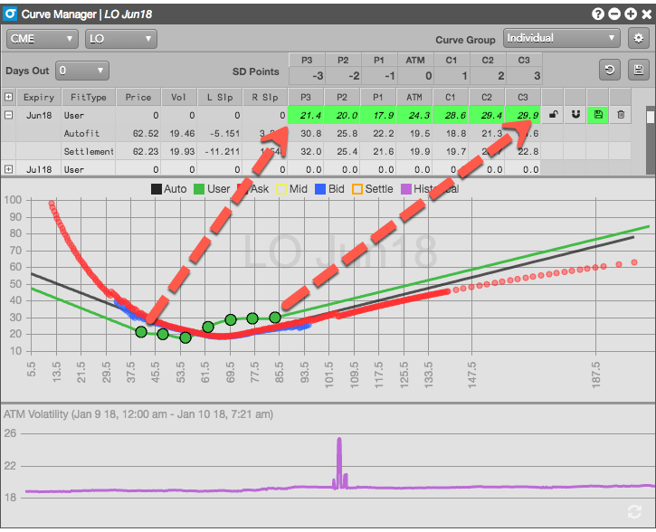
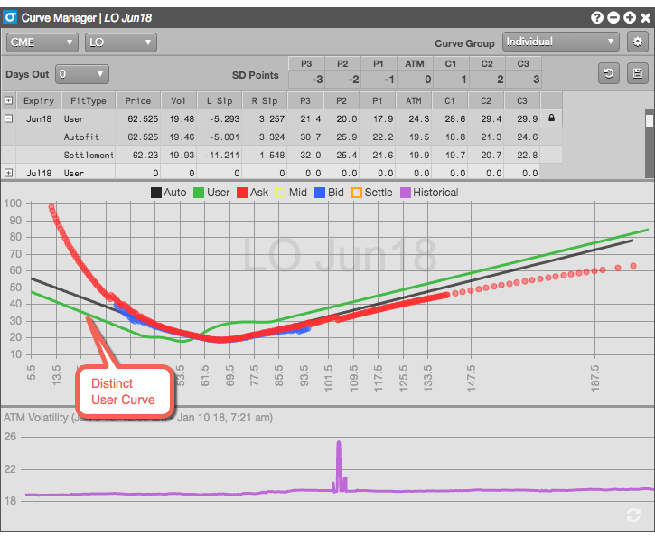
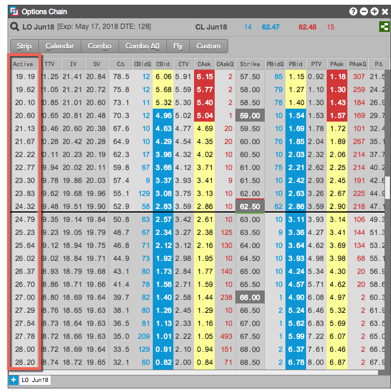

Select the desired contract to display its current volatility curves, and ensure that the User curve is selected and visible.
Click for the selected contract to open the edit options.

- Lock/unlock the ability to edit the paramaters.
- Snap the User curve to an existing curve as a starting point.
- Save the changes to the User curve.
- Delete the User curve and revert it back to matching the Autofit curve.
Click and select which curve you want use as the starting point for your user-defined curve.

Moveable points are added to the User curve that correspond to the volatility formula control points.

Based on your own calculations, drag one or more of the control points to reflect your calculated volatility. As you move the points, notice that the control point field values automatically update.

Note: If you prefer, you can also enter the values directly in the control point fields. The points in the grid move accordingly.
Click  to create the new User curve.
to create the new User curve.
The curve is updated and is now distinct from TT-calculated curves.

When you save the User-defined curve, the values from the curve are updated in the Active column in the Options Chain widget. Those values are then used to calculate theoretical values.
Note: If you click the trash can, you will revert to TT's autofit vol curve.
